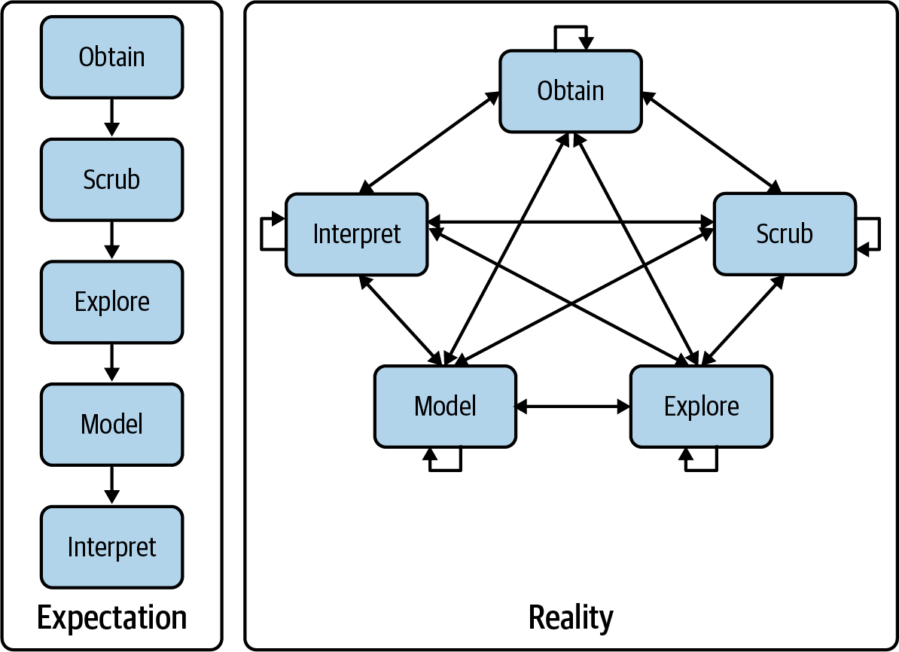
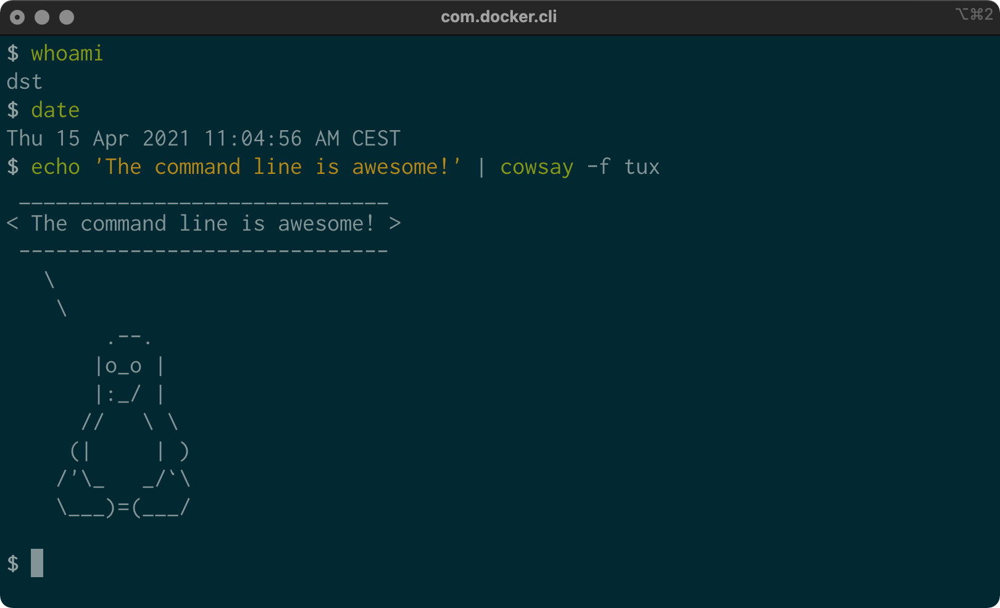
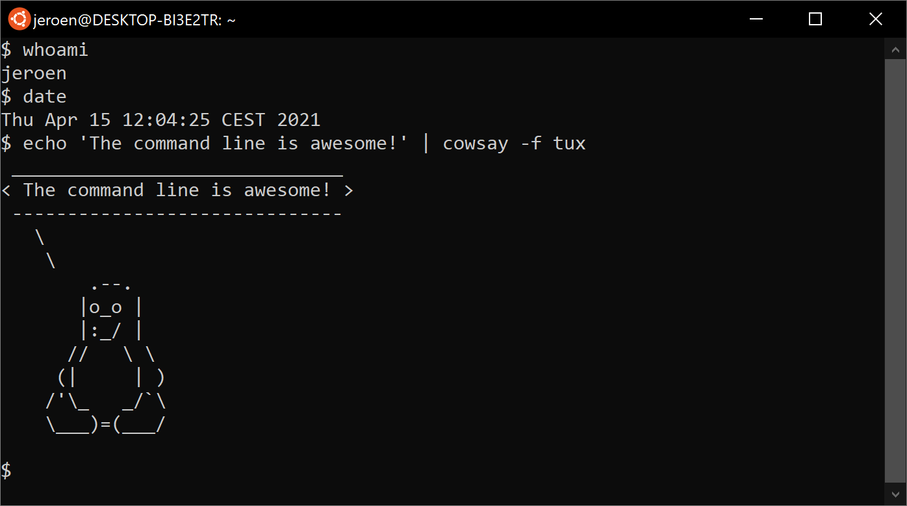

1 Introduction
This book is about doing data science at the command line. My aim is to make you a more efficient and productive data scientist by teaching you how to leverage the power of the command line.
Having both the terms data science and command line in the title requires an explanation. How can a technology that is over 50 years old1 be of any use to a field that is only a few years young?
Today, data scientists can choose from an overwhelming collection of exciting technologies and programming languages. Python, R, Julia, and Apache Spark are but a few examples. You may already have experience in one or more of these. If so, then why should you still care about the command line for doing data science? What does the command line have to offer that these other technologies and programming languages do not?
These are all valid questions. In this first chapter I will answer these questions as follows. First, I provide a practical definition of data science that will act as the backbone of this book. Second, I’ll list five important advantages of the command line. By the end of this chapter I hope to have convinced you that the command line is indeed worth learning for doing data science.
1.1 Data Science is OSEMN
The field of data science is still in its infancy, and as such, there exist various definitions of what it encompasses. Throughout this book I employ a very practical definition by Hilary Mason and Chris H. Wiggins2. They define data science according to the following five steps: (1) obtaining data, (2) scrubbing data, (3) exploring data, (4) modeling data, and (5) interpreting data. Together, these steps form the OSEMN model (which is pronounced as awesome). This definition serves as the backbone of this book because each step, (except step 5, interpreting data, which I explain below) has its own chapter.
Although the five steps are discussed in a linear and incremental fashion, in practice it is very common to move back and forth between them or to perform multiple steps at the same time. Figure 1.1 illustrates that doing data science is an iterative and non-linear process. For example, once you have modeled your data, and you look at the results, you may decide to go back to the scrubbing step to the adjust the features of the dataset.

Below I explain what each step entails.
1.1.1 Obtaining Data
Without any data, there is little data science you can do. So the first step is obtaining data. Unless you are fortunate enough to already possess data, you may need to do one or more of the following:
- Download data from another location (e.g., a webpage or server)
- Query data from a database or API (e.g., MySQL or Twitter)
- Extract data from another file (e.g., an HTML file or spreadsheet)
- Generate data yourself (e.g., reading sensors or taking surveys)
In Chapter 3, I discuss several methods for obtaining data using the command line. The obtained data will most likely be in either plain text, CSV, JSON, HTML, or XML format. The next step is to scrub this data.
1.1.2 Scrubbing Data
It is not uncommon that the obtained data has missing values, inconsistencies, errors, weird characters, or uninteresting columns. In that case, you have to scrub, or clean, the data before you can do anything interesting with it. Common scrubbing operations include:
- Filtering lines
- Extracting certain columns
- Replacing values
- Extracting words
- Handling missing values and duplicates
- Converting data from one format to another
While we data scientists love to create exciting data visualizations and insightful models (steps 3 and 4), usually much effort goes into obtaining and scrubbing the required data first (steps 1 and 2). In Data Jujitsu, DJ Patil3 states that “80% of the work in any data project is in cleaning the data.” In Chapter 5, I demonstrate how the command line can help accomplish such data scrubbing operations.
1.1.3 Exploring Data
Once you have scrubbed your data, you are ready to explore it. This is where it gets interesting because when you’re exploring, you will truly get to know your data. In Chapter 7 I show you how the command line can be used to:
- Look at your data
- Derive statistics from your data
- Create insightful visualizations
Command-line tools introduced in Chapter 7 include: csvstat4 and rush5.
1.1.4 Modeling Data
If you want to explain the data or predict what will happen, you probably want to create a statistical model of your data. Techniques to create a model include clustering, classification, regression, and dimensionality reduction. The command line is not suitable for programming a new type of model from scratch. It is, however, very useful to be able to build a model from the command line. In Chapter 9 I will introduce several command-line tools that either build a model locally or employ an API to perform the computation in the cloud.
1.1.5 Interpreting Data
The final and perhaps most important step in the OSEMN model is interpreting data. This step involves:
- Drawing conclusions from your data
- Evaluating what your results mean
- Communicating your result
To be honest, the computer is of little use here, and the command line does not really come into play at this stage. Once you have reached this step, it’s up to you. This is the only step in the OSEMN model which does not have its own chapter. Instead, I refer you to the book Thinking with Data by Max Shron6.
1.2 Intermezzo Chapters
Besides the chapters that cover the OSEMN steps, there are four intermezzo chapters. Each discusses a more general topic concerning data science, and how the command line is employed for that. These topics are applicable to any step in the data science process.
In Chapter 4, I discuss how to create reusable tools for the command line. These personal tools can come from both long commands that you have typed on the command line, or from existing code that you have written in, say, Python or R. Being able to create your own tools allows you to become more efficient and productive.
Because the command line is an interactive environment for doing data science, it can become challenging to keep track of your workflow. In Chapter 6, I demonstrate a command-line tool called make, which allows you to define your data science workflow in terms of tasks and the dependencies between them. This tool increases the reproducibility of your workflow, not only for you but also for your colleagues and peers.
In Chapter 8, I explain how your commands and tools can be sped up by running them in parallel. Using a command-line tool called GNU Parallel7, you can apply command-line tools to very large datasets and run them on multiple cores or even remote machines.
In Chapter 10, I discuss how to employ the power of the command line in other environments and programming languages such as R, RStudio, Python, Jupyter Notebooks, and even Apache Spark.
1.3 What is the Command Line?
Before I discuss why you should use the command line for data science, let’s take a peek at what the command line actually looks like (it may be already familiar to you). Figure 1.2 and Figure 1.3 show a screenshot of the command line as it appears by default on macOS and Ubuntu, respectively. Ubuntu is a particular distribution of GNU/Linux, and it’s the one I’ll be using in this book.


The window shown in the two screenshots is called the terminal. This is the program that enables you to interact with the shell. It is the shell that executes the commands I type in. In Chapter 2, I explain these two terms in more detail.
I’m not showing the Microsoft Windows command line (also known as the Command Prompt or PowerShell), because it’s fundamentally different and incompatible with the commands presented in this book. The good news is that you can install a Docker image on Microsoft Windows so that you’re able to follow along. How to install the Docker image is explained in Chapter 2.
Typing commands is a very different way of interacting with your computer than through a graphical user interface (GUI). If you are mostly used to processing data in, say, Microsoft Excel, then this approach may seem intimidating at first. Don’t be afraid. Trust me when I say that you’ll get used to working at the command line very quickly.
In this book, the commands that I type and the output that they generate are displayed as text. For example, the contents of the terminal in the two screenshots would look like this:
whoami
dst
date
Thu Nov 5 05:49:15 PM UTC 2026
echo 'The command line is awesome!' | cowsay -f tux
______________________________
< The command line is awesome! >
------------------------------
\
\
.--.
|o_o |
|:_/ |
// \ \
(| | )
/'\_ _/`\
\___)=(___/
You’ll also notice that each command is preceded with a dollar sign ($). This is called the prompt. The prompt in the two screenshots showed more information, namely the username, the date, and a penguin. It’s a convention to show only a dollar sign in examples, because the prompt (1) can change during a session (when you go to a different directory), (2) can be customized by the user (e.g., it can also show the time or the current git8 branch you’re working on), and (3) is irrelevant for the commands themselves.
In the next chapter I’ll explain much more about essential command-line concepts. Now it’s time to first explain why you should learn to use the command line for doing data science.
1.4 Why Data Science at the Command Line?
The command line has many great advantages that can really make you a more efficient and productive data scientist. Roughly grouping the advantages, the command line is: agile, augmenting, scalable, extensible, and ubiquitous. I elaborate on each advantage below.
1.4.1 The Command Line is Agile
The first advantage of the command line is that it allows you to be agile. Data science has a very interactive and exploratory nature, and the environment that you work in needs to allow for that. The command line achieves this by two means.
First, the command line provides a so-called read-eval-print-loop (REPL). This means that you type in command, press Enter, and the command is evaluated immediately. A REPL is often much more convenient for doing data science than the edit-compile-run-debug cycle associated with scripts, large programs, and, say, Hadoop jobs. Your commands are executed immediately, may be stopped at will, and can be changed quickly. This short iteration cycle really allows you to play with your data.
Second, the command line is very close to the file system. Because data is the main ingredient for doing data science, it is important to be able to work easily with the files that contain your dataset. The command line offers many convenient tools for this.
1.4.2 The Command Line is Augmenting
The command line integrates well with other technologies. Whatever technology your data science workflow currently includes (whether it’s R, Python, or Excel), please know that I’m not suggesting you abandon that workflow. Instead, consider the command line as an augmenting technology that amplifies the technologies you’re currently employing. It can do so in three ways.
First, the command line can act as a glue between many different data science tools. One way to glue tools is by connecting the output from the first tool to the input of the second tool. In Chapter 2 I explain how this works.
Second, you can often delegate tasks to the command line from your own environment. For example, Python, R, and Apache Spark allow you to run command-line tools and capture their output. I demonstrate this with examples in Chapter 10.
Third, you can convert your code (e.g., a Python or R script) into a reusable command-line tool. That way, it doesn’t matter anymore in what language it’s written. Now, it can be used from the command line directly or from any environment that integrates with the command line as mentioned in the previous paragraph. I explain how to this in Chapter 4.
In the end, every technology has its strengths and weaknesses, so it’s good to know several and use whichever is most appropriate for the task at hand. Sometimes that means using R, sometimes the command line, and sometimes even pen and paper. By the end of this book you’ll have a solid understanding of when you should use the command line, and when you’re better off continuing with your favorite programming language or statistical computing environment.
1.4.3 The Command Line is Scalable
As I’ve said before, working on the command line is very different from using a GUI. On the command line you do things by typing, whereas with a GUI, you do things by pointing and clicking with a mouse.
Everything that you type manually on the command line can also be automated through scripts and tools. This makes it very easy to re-run your commands in case you made a mistake, when the input data has changed, or because your colleague wants to perform the same analysis. Moreover, your commands can be run at specific intervals, on a remote server, and in parallel on many chunks of data (more on that in Chapter 8).
Because the command line is automatable, it becomes scalable and repeatable. It’s not straightforward to automate pointing and clicking, which makes a GUI a less suitable environment for doing scalable and repeatable data science.
1.4.4 The Command Line is Extensible
The command line itself was invented over 50 years ago. Its core functionality has largely remained unchanged, but its tools, which are the workhorses of the command-line, are being developed on a daily basis.
The command line itself is language-agnostic. This allows the command-line tools to be written in many different programming languages. The open source community is producing many free and high-quality command-line tools that we can use for data science.
These command-line tools can work together, which makes the command line very flexible. You can also create your own tools, allowing you to extending the effective functionality of the command line.
1.4.5 The Command Line is Ubiquitous
Because the command line comes with any Unix-like operating system, including Ubuntu Linux and macOS, it can be found in many places. Plus, 100% of the top 500 supercomputers are running Linux.9 So, if you ever get your hands on one of those supercomputers (or if you ever find yourself in Jurassic Park with the doorlocks not working), you better know your way around the command line!
But Linux not only runs on supercomputers. It also runs on servers, laptops, and embedded systems. These days, many companies offer cloud computing, where you can easily launch new machines on the fly. If you ever log in to such a machine (or a server in general), it’s almost certain that you’ll arrive at the command line.
It’s also important to note that the command line isn’t just a hype. This technology has been around for more than five decades, and I’m convinced that it’s here to stay for another five. Learning how to use the command line (for data science and in general) is therefore a worthwhile investment.
1.5 Summary
In this chapter I have introduced you to OSEMN model for doing the data science, which I use as a guide throughout the book. I have provided some background about the Unix command line and hopefully convinced you that it’s a suitable environment for doing data science. In the next chapter I’m going to show you how to get started by installing the datasets and tools and explaining the fundamental concepts.
1.6 For Further Exploration
- The book UNIX: A History and a Memoir by Brian W. Kernighan tells the story of Unix, explaining what it is, how it was developed, and why it matters.
- In 2018 I gave a presentation titled 50 Reasons to Learn the Shell for Doing Data Science at Strata London. You can read the slides if you need even more convincing.
- The short but sweet book Thinking with Data by Max Shron focuses on the why instead of the how and provides a framework for defining your data science project that will help you ask the right questions and solve the right problems.
The development of the UNIX operating system started back in 1969. It featured a command line since the beginning. The important concept of pipes, which I will discuss in Section 2.3, was added in 1973.↩︎
“A Taxonomy of Data Science,” 2010, http://www.dataists.com/2010/09/a-taxonomy-of-data-science.↩︎
Data Jujitsu (O’Reilly Media, 2012).↩︎
Christopher Groskopf, csvstat – Print Descriptive Statistics for Each Column in a CSV File, version 1.0.5, 2020, https://csvkit.rtfd.org.↩︎
Jeroen Janssens, rush – R One-Liners from the Shell, version 0.1, 2021, https://github.com/jeroenjanssens/rush.↩︎
Thinking with Data (O’Reilly Media, 2014).↩︎
Ole Tange, parallel – Build and Execute Shell Command Lines from Standard Input in Parallel, version 20161222, 2016, https://www.gnu.org/software/parallel.↩︎
Linus Torvalds and Junio C. Hamano, git – the Stupid Content Tracker, version 2.25.1, 2021, https://git-scm.com.↩︎
See TOP500 which keeps track of how many super computers run Linux.↩︎